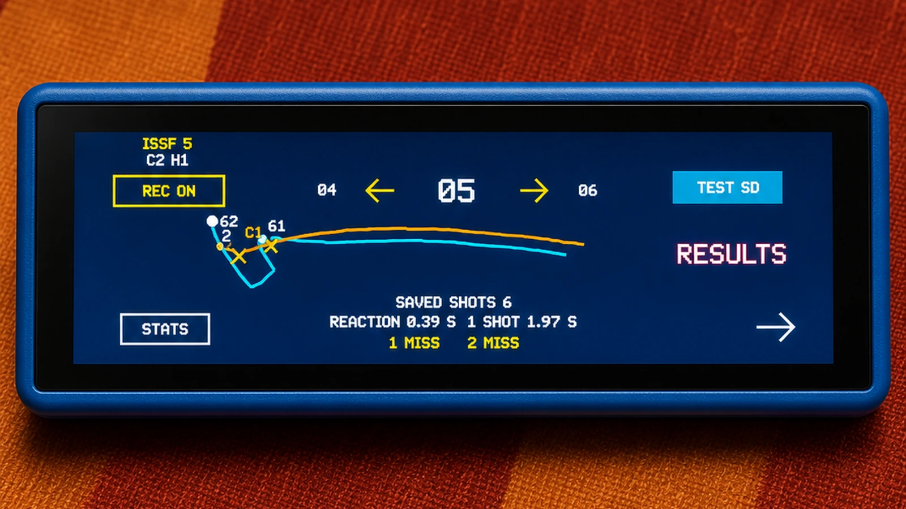
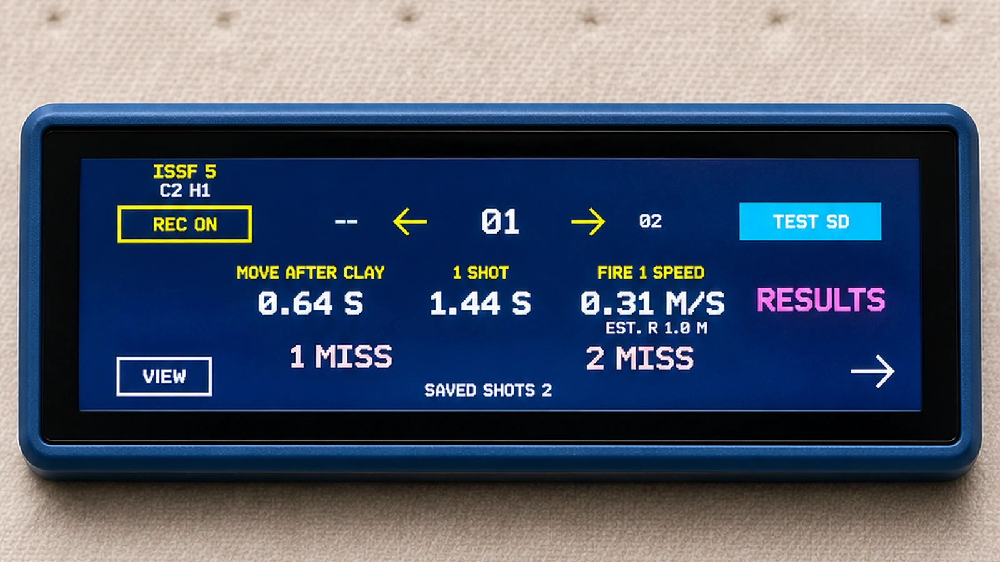
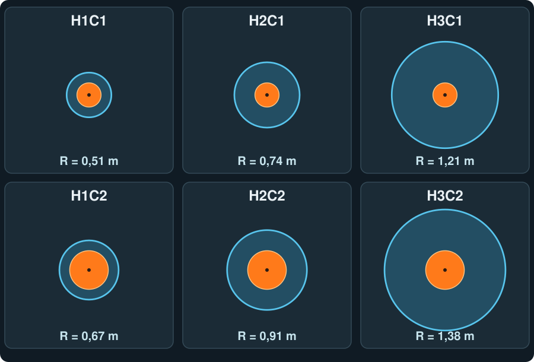
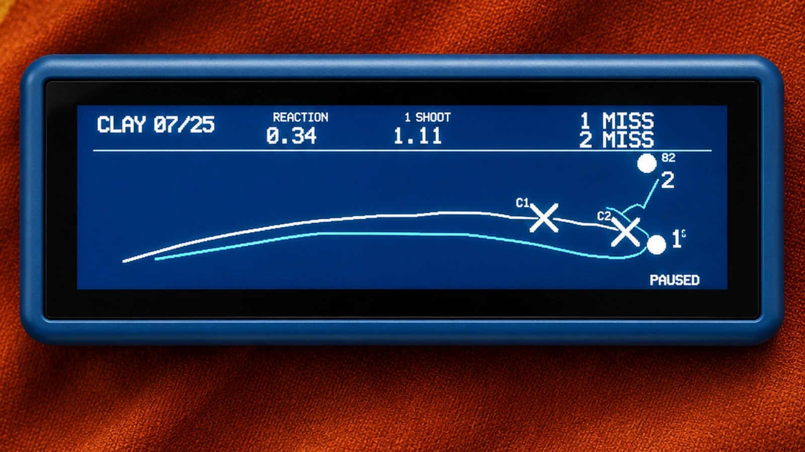

MASTER
H1C1
Standard HIT · smaller target

TRAP COACH
Look at what happened between target appearance and the virtual shot: when movement began, how it travelled and where the shot landed in the simulation.
Illustrative product render; final appearance may vary.

Illustrative product render; final appearance may vary.
TIMING
COACH can show movement onset, the interval from a visible clay to a first shot, angular motion and an estimated linear speed. These values describe the simulator and its sensor data, not a certified assessment of live technique.
SESSION REVIEW
Review virtual hits and misses, first- and second-shot timing, and session-level results. Compare like for like: the same simulator settings make records more meaningful.

Illustrative product render; final appearance may vary.
OFFICIAL SERIES · RECREATIONAL STARS
Class depends on both settings. FAN includes H2C1 and H2C2; FUNNY includes H3C1 and H3C2. A different H value still counts as a separate setup when combining results for stars.
HIT and CLAY settings change the size of the virtual effective collision zone. Compare the six presets visually before comparing scores.
H1C1
Standard HIT · smaller target
H1C2
Standard HIT · larger target
H2C1 / H2C2
H2 assisted HIT · either target size
H3C1 / H3C2
H3 assisted HIT · either target size

H1: standard allowance. H2: double the added shot-pattern allowance. H3: four times the added allowance. C1 is the smaller virtual target; C2 is the larger. The multiplier applies to the additional allowance, not the full HIT radius. This is a simplified simulator model, not a real pellet pattern.
The six exact H/C combinations remain separate for earning stars, even when they share a FAN or FUNNY class label.
| STAR LEVEL | HITS REQUIRED | OFFICIAL SERIES | STATUS |
|---|---|---|---|
| ★ 1 STAR | 16 / 25 | 1 | ACTIVE |
| ★★ 2 STARS | 42 / 50 | 2 consecutive | ACTIVE |
| ★★★ 3 STARS | 90 / 100 or 134 / 150 | 4 or 6 consecutive | PLANNED |
| ★★★★ 4 STARS | 96 / 100 or 143 / 150 or 190 / 200 | 4, 6 or 8 consecutive | PLANNED |
| ★★★★★ 5 STARS | 195 / 200 | 8 consecutive | PLANNED |
Only 1 and 2 stars are awarded automatically today. For two stars the combined score must reach 42/50 in two consecutive, completed official 25-target series with exactly the same H/C settings. Training does not qualify. Levels 3–5 are a visible roadmap, not automatically earned awards or official ISSF titles. The ESP32 RESULTS screen and offline COACH show awards from saved results.

Illustrative product render; final appearance may vary.
FOLLOW THE TRACE
Target and device-motion trajectories help place a virtual shot in context. Optional export to a microSD card can support later review; the card is not included and normal play does not need one.
See the ready-to-use deviceA CLEAR LIMIT
TrapFan does not measure a real barrel path, eye movement or live-range accuracy. Treat COACH as a way to make practice observations, then discuss live technique with an appropriate coach.